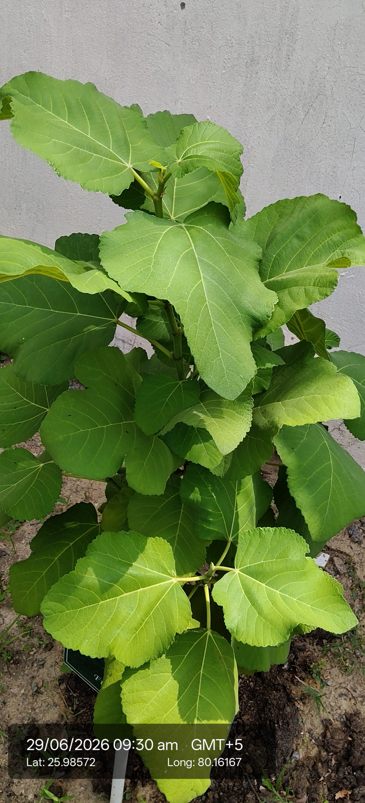

Visual record01 photographs

| Scientific name | Ficus carica |
|---|---|
| Family | Moraceae |
| Type | Small deciduous tree or shrub. |
| Category | Shrubs |
Habitat & Growing Conditions
- Native to the Mediterranean and Western Asia, now cultivated widely in tropical and subtropical regions.
- Large lobed leaves, milky latex, produces edible fruits (figs).
Economic Importance
- Fruits are eaten fresh, dried, or processed into jams and sweets.
- Rich in fiber, vitamins, and minerals.
- Used in traditional medicine for digestive health.
- Latex sometimes applied for skin conditions.
- Cultivated as a cash crop in many countries.
- Plays a role in religious and cultural traditions.
- Leaves used in folk remedies for diabetes and inflammation.
- Important in export trade as dried figs.
- Supports pollinators (fig wasps in natural pollination).
- Economically valuable as both food and medicinal plant.
Medicinal Importance
Medicinal notes pending.